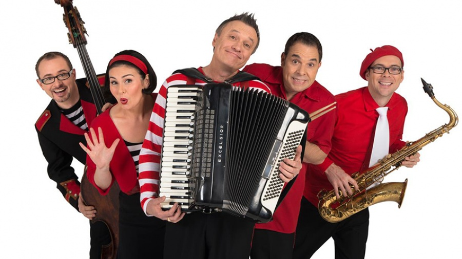

A new programming approach for children today

(Continued from Parts One and Two.) There is no justification for the Government to fund children’s television and media, if it is not for the clear developmental benefit of children. There are ample other opportunities for children to amuse themselves and support for children’s programming should not be about providing jobs for producers. What remains important today is the same fundamental issue as when we started in the 70’s – the contribution to and impact of the media system on the young.Any regulations for children’s programs designed in 2017 should be crafted to suit the media world children are living in today. The commercial networks are no longer fit for purpose. The programs they are making for the quota add little value beyond diversion and it makes no sense to attempt to change their ways now. We have done that with limited success for 40 years. A completely new approach to children’s programming is required. That said, the $30 million the networks should have been paying for quota programs should be required as a payment to be allocated to a dedicated fund for a new service.
Children’s Television Standards today should serve the essential programming needs of Australian children in two main age groups.
The first group is the 0-8/9 year old audience where the educational need is paramount. These children should be serviced by programs which will support their development in the crucial early years, helping their emotional growth and readiness to learn. This is rightly the role of the ABC as our public broadcaster. These children are not a market, they are an audience with special needs. Programs made for them require creative teams who understand child development and see media education as a part of a service for them.
Just as we need to subsidise schools, we need to subsidise the media programs that will support the development and enlightenment of young children. A program that is well designed and takes into consideration the child development process will enhance their progress more effectively than those geared towards commercial ends. As well, the children who will benefit most are those whose parents find ways to interact during viewing and take advantage of learning opportunities embedded in the program.
Fifty years of research shows the children of low income parents enter school with poorer language skills than their more affluent peers because of parenting styles and home learning environments. By age four children in middle and upper class families hear 15 million more words than those in working class families and 30 million more words than children in families on welfare. The word gap is established by age two. If parents don’t talk to children and read to them regularly their cognitive development is impaired. The word gap leaves children disadvantaged for life. Their early math and reading skills, emotional and behavioural control, and physical well-being are undermined if they are not ready for school. [9. Christopher Bergland, Tackling the vocabulary gap between rich and poor children, Psychology Today, February 16th, 2014; Dr Ann Fernald (Stanford University) paper presented to the American Association for Advancement of Science, February, 2014.]
Neither government advisers nor early childhood experts talk about television, advertising, or the internet when they speak of early childhood education, health, and social policies. Nor do they apparently see the potential of quality early childhood media programs that employ drama, music, stories and information to enrich the lives of children to play a positive role in the development of the young child’s brain power. We seem to have lost sight of the positive potential of the media to help children learn to understand the world they live in, and to gain some control over it. This enquiry offers the opportunity to rectify this serious omission.
The ABC should be supported to cater for this age group by developing new programs incorporating the potential offered by new media and designed around the goals of the Early Childhood Curriculum Framework. This would be a major contribution to education as programs would be accessible to all children in their pre-school years which would help compensate for the fact that so many children are not attending preschool before age four.
If the task of early childhood and early schooling is defined as ‘learning to find your way around in the world’, then mass media and the tools of modern technology have the potential to help in this task by taking every child well beyond the intimate confines of the family home to a wealth of ‘life experiences’, to discover who they are in relation to the wider human family and their social and physical environment. Media can provide visual, verbal, emotional, social and even physical modes of dealing with the world.
There are a number of principles that should underlie the production of media for young children today that justifies subsidy and regulation.
- All media aimed at children should be trustworthy, putting the interests of the child as citizen and outcomes worthy of the good society above the interests of profit.
- Media producers should work in partnership with educators. The new media context for children requires risk-taking, both on the part of producers who should test new boundaries and on part of the educators guiding the young.
- Exploration of ideas should include storytelling, but games and interactivity are an important part of the mix today.
- All current preschool programming should be reassessed to ensure qualifying programs have a sound and up-to-date educational development basis and do not exploit children.
The ABC should rationalize its current children’s channels, maintaining one channel only, supported by online and mobile platforms and focusing on the 0-8/9 age group with a fresh approach to programming.
The second group is the 9-16 year olds who have moved away from scheduled television and now require an online, on-demand service with new content that would serve their best interests. This group could take part in helping to run this service.
Young people have taken ownership of the new media. They want to see themselves, their real lives, reflected in this media. They want to participate and make their own media programs, in their own ways, albeit for their own entertainment. But their interest in digital stories is also about finding meaning in their lives, seeking relationships and sharing with peers, and through this means they can play their part in influencing political and social decision-making. Their films should have a global reach, for interaction with other cultures. We are in a world where all children can become active producers of online content, as they are already doing on You Tube.
The phenomenon of YouTube, reputedly created (2005) by two friends who were having difficulty sharing a homemade video, demonstrates in startling terms how much material is 'out there' and how much young people are interested in engaging in small scale production. Kids love YouTube. Schoolyard word-of-mouth and texting mean they can promote their own little films and share very funny experiences widely with their friends. Trawling YouTube is a lot more fun than watching the umpteenth repeat of children's channel programs.
A new service for them should be a project-driven experience which leads to rewarding outcomes for the participants and also engages the wider community. It has to be a destination that is distinguished from existing services. The kids could develop projects on a managed basis. Drama would be a small subset. Kids do enjoy excellent drama and comedy and are attracted to controversial content, but this should not be the main focus for they have a wealth of television drama series to choose from that was not available when Standards were first introduced. There are other formats to consider when the goal is to invoke truly challenging interactive exchange. Examining the motives of a production would be a good way to dissect the media and could be part of a project. Kids are very good at sending things up, disrupting and pulling things apart; spoofing programs and characters. They should be encouraged to turn the spotlight on the media and dissect it. This process would aid their understanding.
In deciding on a service for this group we need to understand they are not the children of the 80’s; they are much more worldly and they are not going back to that more sheltered world. Their family life style and exposure to the world around them makes them different people from what they were in the 80’s. Children’s quota drama was always watched by children younger than the targeted audience producers thought they were going for, invariably because children are usually underestimated. Worldwide there has been no media organization that has targeted teens successfully; they are a most elusive audience. But we know now what interests them.
This group is maturing earlier because of their different life experience and exposure to the realities of the world they live in; domestic violence, alcohol, drugs, climate change, pornography, pedophilia, terrorism are issues talked about everywhere. Children cannot be isolated as they were in the 80’s when there were single household television sets and no social media. Today they are mobile, with a range of devices at their disposal and they can access any content they want. Parents have lost control of their children’s viewing and media interactions. They are viewing adult and family entertainment, not children’s programs and when they watch television they view reality shows which did not exist in the 80’s. They have the entertainment they need but they still enjoy and need challenge, education and guidance which we could be providing through an online, on-demand service, suited to their needs and interests.
Their needs can’t be fulfilled by quotas on the commercial networks. They need a dedicated service built from the ground up, a not-for-profit enterprise that can be funded from a variety of sources including corporate sponsorship. The $30 million from the networks, to be paid annually, should go to this service along with government funding.
The media this group generates for themselves is an important part of the mix. Children and young adults are the new communication nomads, always on the move, using media and its tools adaptively to suit their own purposes and control their own virtual space. The internet is a magnificent way to distribute their culture, serving this generation as the library did previous generations.
Productions by children with new and experimental formats should be encouraged. Hybrid programs that link television, computers, mobiles and the internet should also be part of the mix.
An online multi-platform service for children should also include an interactive cyber-literacy destination developed in partnership with educators.[10. Patricia Edgar & Don Edgar, Television, Digital Media and Children’s Learning, Victorian Curriculum Assessment Authority, 2008. This paper was commissioned by the VCAA to promote discussion about the important issue of children’s learning and development through electronic media and new technologies, specifically in relation to the new National Early Childhood Curriculum.] Media literacy would provide important tools to help children in this age group navigate new media and the internet which have thrown up new challenges impinging on their social development. Media literacy in the past has focused on basic technological know-how. A broader approach is called for today in four main areas which would cover children’s ability to: access the media; understand the media they access – children must learn the difference between reality and representation, how to cope with upsetting emotional responses to media content, and to make critical judgments about fake news, privacy, bullying, sharing online, TV violence, advertisements and branding. They need to learn how to create. Even though children’s own production of media content is rapidly expanding, there are new developments to master with smart mobile phones and website interactivity. Fourthly they need to understand how to learn through the media in the areas of physical growth and health, language and communicative competence, self-understanding and interpersonal skills, cognitive skills and general knowledge.
Conclusion
The regulation and the preservation of children’s programming content is justified but with the proposed restructure drama quotas would not be necessary. In 2017 there should be a new approach to funding children’s content. The ABC should be responsible for early childhood programs for children up to the age of eight to nine years. A new online interactive service should be established for children aged 9-16 more relevant to their needs and interests which is paid for in part by the commercial networks relinquishing their responsibility for children’s programming.
As a tool for the voice of children, as a tool for the education of children, as a tool for cultural identity, the media is unequalled. Children come to media willingly yet we do not use technologies to develop and teach children; we use them to market to them. In order to attract children to relevant, appropriate material that is designed with their best interests at heart, producers need to take risks and to engage with the education revolution. Children should be a part of that process.
The importance of media in the education of children has not been well recognised by the education system because there has not been a whole-of-government perspective linking education policy and communication policy. Communication and technology policies should be seen as integral to the nation’s education policy.
Media Education should be expanded beyond a narrow focus on cyber-literacy skills to include the content and learning potential of all forms of digital media and their social impact in order for children to fully understand and benefit from the communication revolution
I don't really see why the ABC is the default here. You could have any number of administrative bodies run things for younger kids -- for example, the Education Department (or similar) could tender for different types of deliverables, and especially for new media, I don't see why they would be any worse than the ABC. This way you could target parts of the spectrum where stuff is missing or where someone happens to think there is not enough Australian content if that is a particular goal. Now it may well be the ABC would win a lot of those tenders, but I can't see why they should be given them with no competitive application process when other groups might be better.
Also, some of the statistics you are throwing around are probably bogus and are just things people repeat. In particular, this claim:"By age four children in middle and upper class families hear 15 million more words than those in working class families and 30 million more words than children in families on welfare" passes no real reality check.
The number of words people speak per day is highly variable, but even in samples you would expect to talk a lot (university students) you get a mean of around 16,000 (see e.g., here . To get to 30 million extra words in 4 years, you would have to hear around 20,000 more words per day over someone that didn't hear any. That's a lot of extra talking people would be doing to their 0-4 year olds, many of whom would be in childcare a good chunk of the day some days of the week and essentially all of whom have reduced waking hours compared to adults.
Thanks Conrad,
I agree in principle about the ABC.
Education departments mightn't be all that good at commissioning, but I'm not that sure the ABC would be particularly either.
In the end you're trying to encourage institutional learning.